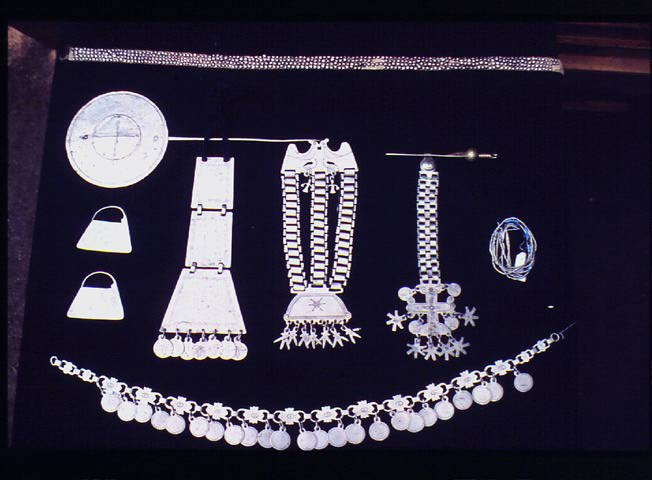
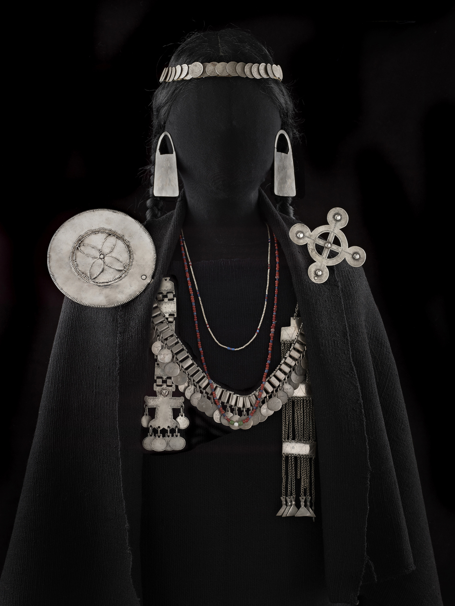
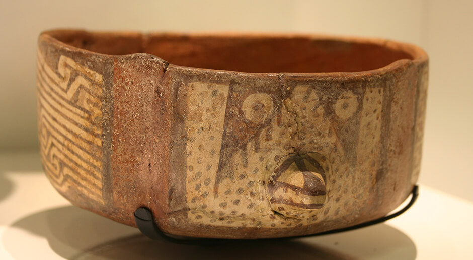
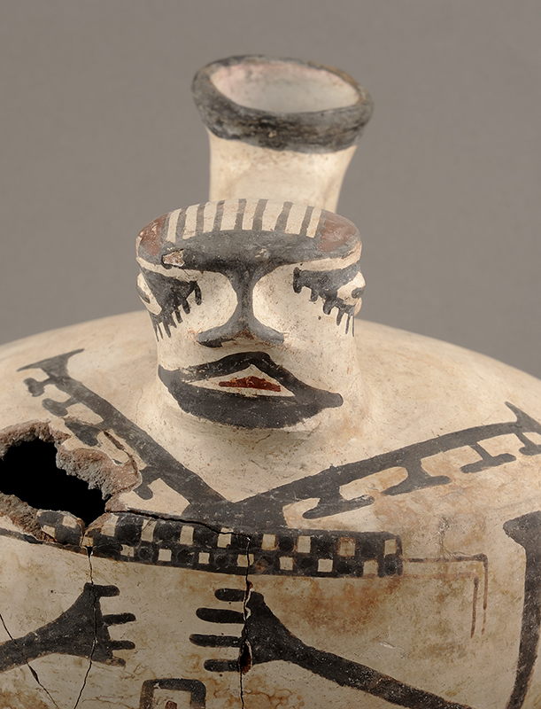

Tecnica usada: Orfebrería.
Material: Plata.
No hay certeza del orígen de la platería mapuche, pero el gran rtabajo de rería mapuche aparece en el siglo XVIII, donde se ocuparon las monedas de plata que obtenían en la venta de sus animales durante la Frontera. estas monedas eran fundidas o martilladas y trabajadas por los especialistas creando una gran producción de joyas, destinadas principalmente para el uso femenino y en segundo término para los aperos del caballo. Estas otorgaban prestigio y otaban el estatus del hombre y sus mujeres dentro de la estructura social mapuche.
 Venta Proximamente...Tecnica usada: Orfebreria.
Material: Plata.
Sabemos que, así como la platería de los aperos ecuestres era casi siempre fabricada por plateros criollos que copiaban los modelos europeos adaptaban a las necesidad indígenas, eran generalmente plateros indígenas los que fabricaban las joyas de las mujeres, fundiendo monedas de plata y haciendo tubos, cadenas, cuentas y colgantes que después empleaban para crear la pieza que se les era encargada. Hasta que no sea demostrado lo contrario, debemos sostener que fueron la creatividad y la originalidad indígenas las responsables de la compleja orfebrería mapuche.
 Venta Proximamente...Tecnica usada: Alfareria.
Material: Arcilla.
—Falco sparverius cinnamominus— es un pequeño halcón de gran capacidad de visión y vuelo estacionario que abunda en el Norte Chico. Proponemos que esta ave rapaz fue representada en forma reiterada por los alfareros Diaguita, quienes imitaron de forma estilizada sus negras manchas oculares, pico y plumaje moteado.
 Venta Proximamente...Tecnica usada: Alfareria.
Material: Cerámica
La cerámica hallada en este asentamiento diaguita del período incaico, muestra la integración de figuras zoomorfas y antropomorfas, una mayor variedad cromática en las piezas, y la creación de personajes con traje ajedrezado, además de elementos propios del mundo cuzqueño, como la pachka y los jarros pato.
 Venta Proximamente...